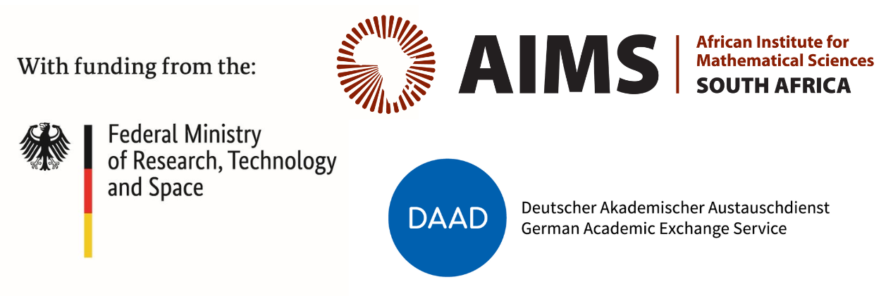
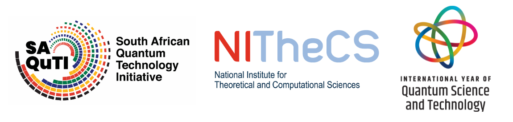

1st AIMS Workshop and School on
The Theory of Quantum
Learning Algorithms
27-30 October 2025
African Institute for Mathematical Sciences
Cape Town, South Africa
Overview
From the 27th to the 30th of October 2025, the African Institute for Mathematical Sciences (AIMS), in Cape Town, South Africa, will host the 1st AIMS Workshop and School on The Theory of Quantum Learning Algorithms.
The event will consist of both a workshop and school, with the workshop taking place in the mornings, and the school in the afternoons. In particular, each morning will consist of three one-hour talks from invited workshop speakers, aimed both at disseminating recent progress on the theory of quantum learning algorithms, as well as formulating important questions and topics for future research. Each afternoon will then consist of tutorials on advanced topics relevant to the subject of the workshop. These afternoon tutorials will be aimed at graduate students in the mathematical sciences with an existing introductory background in quantum computing, and a special interest in research on the mathematical foundations of quantum learning algorithms.
Students of the school are both welcome and encouraged to attend morning workshop talks in order to gain exposure to the latest research on the theory and foundations of quantum learning algorithms. Workshop participants are encouraged to make use of the afternoons for collaborative discussion and research. Indeed, the school and workshop are colocated in order to give students of the school exposure to cutting edge research, and to allow workshop participants time and space (by the beach) for the development of new projects and collaborations.
The Theory of Quantum Learning Algorithms
The last decade has witnessed incredible progress in the development of classical algorithms for machine learning,
which have revolutionised many aspects of society. Similarly, the last decade has also seen significant progress in
both the theory and realisation of quantum computers. Given these developments, a natural and important question is:
To what extent can quantum learning algorithms offer meaningful advantages for learning problems?
Simultaneously, it has also been increasingly appreciated that there exist a wide variety of genuinely quantum
learning problems, such as learning unknown quantum states or processes. Understanding the extent to which one can develop quantum learning algorithms
for these problems is both fundamentally interesting and practically important, both for better understanding the world around us, and for facilitating the development and verification of quantum technologies.
Unlike the classical setting, in which the vast majority of machine learning research is done through incredibly large-scale experiments,
the limitations of current generation quantum computers necessitates the use of theory to develop our understanding of answers to the above questions.
As such, this workshop and school will be focused on the theory and mathematical foundations of quantum learning algorithms,
for both quantum and classical learning problems. Example topics of interest include:
- Quantum algorithms for learning quantum states and processes in a wide variety of learning models.
- Mathematical tools for the development and analysis of quantum learning algorithms.
- Quantum algorithms for both classical and quantum property testing.
- Generalization bounds for quantum learning algorithms.
- Theory of distributed quantum algorithms for learning and property testing.
- Cryptographic security and robustness of quantum learning algorithms.
- Dequantization of quantum learning algorithms.
Workshop Program
The following speakers have been confirmed:
School Program
The following lecturers have been confirmed:
- Ryan Sweke (AIMS) - An Introduction to (Quantum) Learning Theory
- Antonio Anna Mele (FU Berlin) - Haar Integration Tools in Quantum Information
- Lorenzo Leone (FU Berlin) - The Clifford Group and its Applications
Additionally, IBM Research Africa will be delivering a Qiskit workshop to school participants.
More to be announced soon.
Application to attend
Workshop talks are by invitation only.
- If you would like to primarily attend the workshop, please use this form to register your interest.
- If you are currently registered as a student at a South African university, and you would like to attend both the school and workshop, please use this form to register your interest. Full financial support (travel and accomodation) will be available for a limited number of selected students.
- If you are a student who is not at a South African university, and you would like to attend both the school and workshop, please use this form to register your interest.
Unfortunately for both the workshop and school, capacity for participation is limited. We will inform all those who have expressed interest of whether they are able to attend by the 30th of August at the latest.
Venue
The event will be held at the African Institute for Mathematical Sciences (AIMS), which is located in Muizenberg, Cape Town, steps away from the famous "Surfers Corner" beach. The event will be held from Monday 27th of October 2025, until Thursday 30th of October 2025.
Organizing Committee
Lennart Bittel (FU Berlin)
Carlos Bravo-Prieto (FU Berlin)
Chenfeng Cao (FU Berlin)
Jonathan Conrad (EPFL)
Jens Eisert (FU Berlin)
Elies Gil Fuster (FU Berlin)
Sofiene Jerbi (FU Berlin)
Lorenzo Leone (FU Berlin)
Antonio Anna Mele (FU Berlin)
Francesco Anna Mele (Scuola Normale Superiore di Pisa)
Ryan Sweke (African Institute for Mathematical Sciences - Main Organizer)
Yanting Teng (EPFL)
Support

Endorsed by
